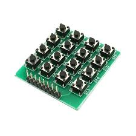
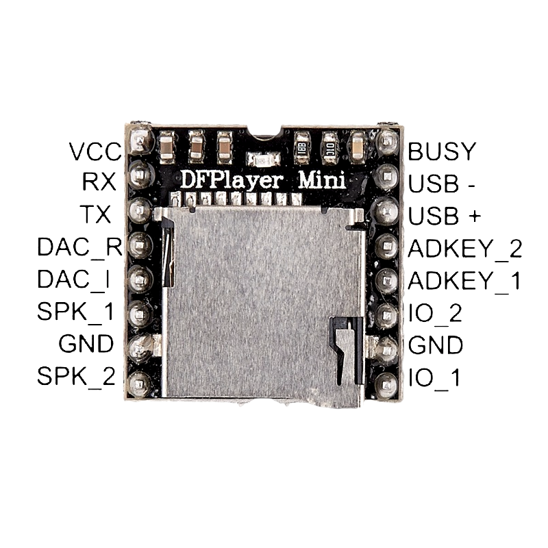

Presentación del Proyecto
El Proyecto PCPC (Proyecto Calculadora Para Ciegos) nació como respuesta a una necesidad concreta: permitir que personas con discapacidad visual puedan realizar cálculos matemáticos de manera autónoma, sin depender de costosos dispositivos del mercado.
El dispositivo fue diseñado con un enfoque inclusivo, accesible y de bajo costo, combinando botones con etiquetas en braille, una pantalla LCD I2C y un módulo de audio que reproduce la voz mediante archivos almacenados en una tarjeta microSD de 32 GB.

Características
- Interfaz táctil con teclado 4x4 adaptado con braille
- Reproducción de voz clara de cada número o operación
- Pantalla LCD para usuarios con baja visión o acompañantes
- Compatible con auriculares o parlantes externos
- Total portabilidad gracias a su bajo consumo y tamaño reducido
Funcionamiento del Sistema
Al presionar una tecla del teclado, el Arduino identifica la entrada y reproduce el audio correspondiente a través del DFPlayer Mini. Simultáneamente, la pantalla LCD muestra la tecla presionada. Una vez completada la operación, el resultado es mostrado y leído número por número.
Este proceso está completamente sincronizado para brindar retroalimentación táctil, visual y auditiva. La programación fue realizada en Arduino IDE, asegurando flexibilidad para futuras mejoras.
Tecnologías Asistivas
El PCPC integra tres vías de comunicación: tacto, vista y oído. Esto lo convierte en una herramienta especialmente versátil en el campo de las tecnologías asistivas. A diferencia de las calculadoras parlantes tradicionales, permite mantener la privacidad y adaptarse a diversos entornos educativos o laborales.
Además, puede ser modificado para incorporar más funciones, como memoria de operaciones o conectividad inalámbrica.
Componentes Utilizados
Arduino Nano
Microcontrolador ATmega328P. Controla toda la lógica del sistema: teclado, pantalla y audio. Su tamaño y eficiencia lo hacen ideal para dispositivos portátiles.

Teclado Matricial 4x4
16 teclas adaptadas con etiquetas en braille. Permite ingresar los dígitos (0-9) y operaciones básicas (+, –, ×, ÷, =, C).
Pantalla LCD I2C
Modelo 16x2 con interfaz I2C. Muestra los números ingresados y resultados. Compatible con usuarios con baja visión.

DFPlayer Mini + microSD 32GB
Reproduce archivos MP3 pregrabados con la voz de cada número y operación. Almacena cientos de audios personalizados.
Parlante o Auricular
Salida de audio configurable según el contexto (público o privado).

Metodología de Desarrollo
- Encuestas a personas ciegas y familias
- Investigación sobre accesibilidad y dispositivos existentes
- Prototipado en placa de pruebas
- Validación de componentes y código
- Ajustes de audio, tiempo de respuesta y accesibilidad
Impacto e Inclusión
El PCPC no es solo un proyecto técnico, es una apuesta por la inclusión real. Permite a estudiantes, trabajadores o cualquier persona con discapacidad visual acceder a una herramienta básica, cotidiana, sin depender de ayuda externa. La posibilidad de combinar braille, voz y pantalla lo vuelve adaptable, humano y efectivo.